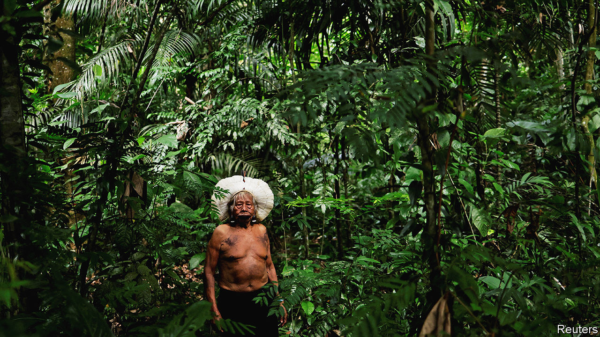
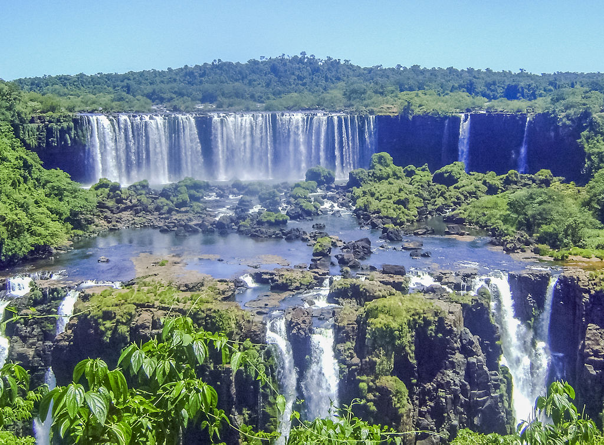
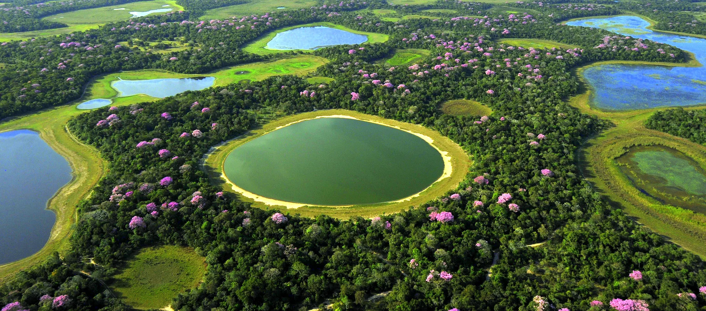
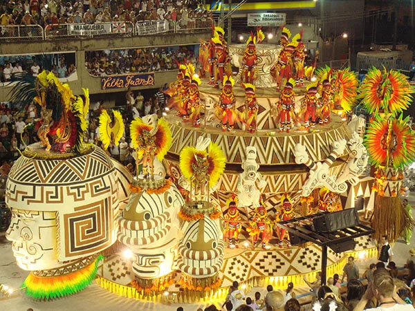

As the largest country in Latin America and the 5th largest country in the world, Brazil is country which lives up to its scale and offers a huge variety of holiday opportunities. It’s a country with some of the biggest and best sights in the world although you may not know about many of them.
Where to visit
RIO DE JANEIRO: is famed for its vibrant spirit, blending beach culture with iconic sights like Ipanema, Copacabana, and Christ the Redeemer on Corcovado Mountain. The city’s beaches, especially Ipanema and Copacabana, capture the relaxed lifestyle of cariocas, where beach volleyball, football, and sunset gatherings bring locals and visitors together.
Founded by Portuguese settlers in 1565, Rio is rich in history, featuring sites like the Imperial Palace, the avant-garde Metropolitan Cathedral, and the bohemian Santa Teresa neighborhood. Highlights include the baroque Candelária Church, Lapa arches, and Samba clubs that make Rio a nightlife hub year-round. For nature lovers, the nearby forests shelter endangered species like the Golden Lion Tamarin, while historic Petropolis offers a charming retreat.
With attractions from football at Maracanã Stadium to cultural walks and the legendary Carnival, Rio offers an unforgettable mix of beauty, culture, and celebration—truly “The Marvellous City.”

THE AMAZON: The river runs from Tabatinga on the Colombian-Peruvian border to Belem on the Atlantic. Boats travel the full length, often starting in Manaus, the main Amazon city, where the Rio Solimões and Rio Negro converge in the "Meeting of the Waters," a 6 km stretch where their brown and black waters flow side by side without mixing. Manaus offers Amazon lodges and boat expeditions, with trips from 3 to 7 nights, or private yacht charters. Whether on a boat or at a lodge, visitors explore the forest, spot wildlife, fish for piranhas, and visit local communities. Adventurous options include kayaking, forest camping, and sport fishing. Further east, Santarém and Belem also offer cruises, while nearby Alter do Chão is famous for its white-sand beach, Ilha do Amor. With flights from major cities, the Amazon is a must-visit on any Brazil trip.

IGUAZU FALLS: one of South America's most iconic landmarks, features hundreds of powerful waterfalls creating a constant roar and mist, often lit by rainbows. Located on the border of Brazil and Argentina, the falls span 275 individual drops, mostly on the Argentine side, with each country offering unique views. Visitors can take thrilling boat rides to the falls' base or enjoy a panoramic view from a helicopter. Walkways provide breathtaking perspectives of the intense Devil’s Throat area. The surrounding National Park is home to toucans, coatis, and butterflies—and, with luck, even jaguars or pumas. For added luxury, nearby hotels offer stunning falls views right from your room.

THE PANTANAL: is the world’s largest floodplain, with seasonal rains from November to January that flood rivers and creeks, closing many lodges. As the waters recede, wildlife spotting improves, with May to October being the best time for viewing. Known for its high jaguar population, the Pantanal offers prime sightings from June to October, particularly along riverbanks where they hunt capybara and caiman. Visitors can stay in lodges for daily excursions or opt for boat-based tours.
In addition to jaguars, the Pantanal is home to tapirs, pumas, giant otters, anteaters, and the Hyacinth Macaw, a bird species successfully reintroduced by local lodges. Access is via flights to Campo Grande (south) or Cuiaba (north), followed by a short flight or drive to lodges. The southern Pantanal pairs well with Bonito, known for eco-tourism, while the north pairs well with the Chapada dos Guimaraes National Park.

Brazil’s Carnival traditions began when the elite imported the practice of masquerade balls from Paris, but over time, the celebration evolved with African and Amerindian influences. Carnival became a festival of role reversal, with aristocrats dressing as commoners, men cross-dressing, and the poor as royalty—blurring social roles for a few days each year.
Today, Rio’s Carnival kicks off on the Friday before Lent, ending officially on Shrove Tuesday, though festivities often spill into Wednesday. The celebration draws an extra 2 million visitors, transforming the city with non-stop parties and two main formats: street parties and the Sambadrome parade. With around 500 free street parties, Carnival’s spirit comes alive across the city. Meanwhile, the Sambadrome hosts a competition among Rio’s top 12 samba schools on Sunday and Monday nights, parading along a 700-meter runway. The spectacle begins at 9 pm, running into early morning, with seating options from budget to VIP boxes for a unique view of Rio’s most iconic event.